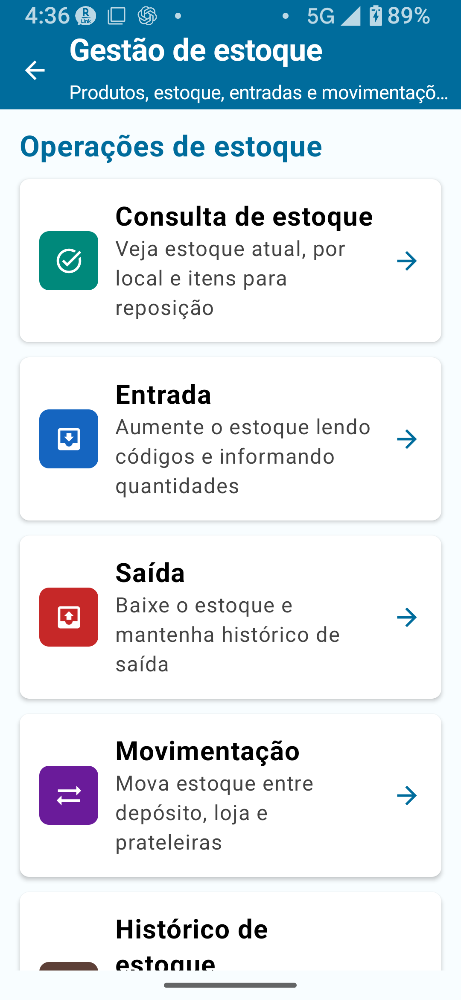
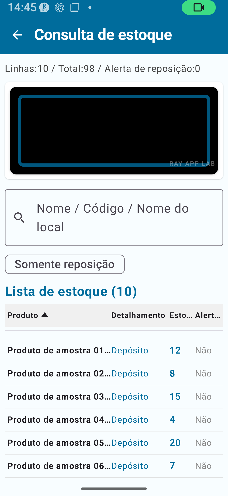
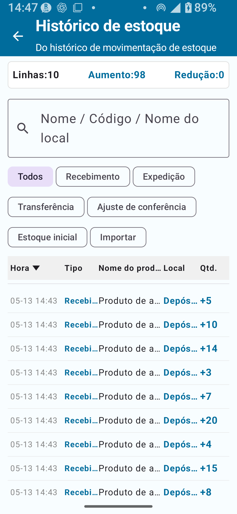
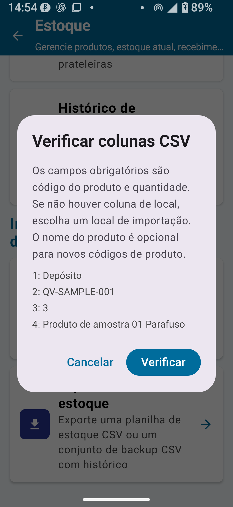
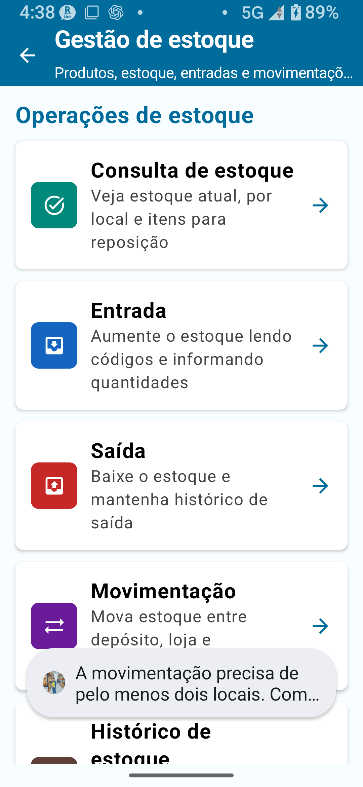

Visão geral do Plano Padrão
O Plano Padrão de Gestão de estoque permite trabalhar com mais registros do que o Plano Gratuito. Você pode realizar com mais conforto as operações diárias de entrada, saída, consulta de estoque e histórico de estoque, e o escopo de gerenciamento de localizações também é ampliado.
Limites do Plano Padrão
| Item | Plano Gratuito | Plano Padrão |
|---|---|---|
| Registros de cadastro | Até 30 | Até 300 |
| Registros de histórico de estoque | Até 30 | Até 1.000 |
| Registros de exportação | Até 30 | Até 300 |
| Bloqueio de rotação da tela | ✗ | ○ |
| Cadastro de localizações | Limitado no Plano Gratuito | Disponível dentro dos limites do Plano Padrão |
| Edição direta do total acumulado registrado | ✗ | ✗ (requer Plano Completo) |

Diferenças em relação ao Plano Gratuito
- Limite de registros de cadastro ampliado de 30 → 300
- Limite de histórico de estoque ampliado de 30 → 1.000
- Limite de exportação ampliado de 30 → 300
- Bloqueio de rotação da tela disponível
- Escopo ampliado para gerenciamento de localizações
- Mais facilidade para manter entradas, saídas, consultas de estoque e histórico no dia a dia
Entrada (recebimento)
A operação de Entrada aumenta o estoque. Use-a quando mercadorias chegarem — em compras, recebimentos e transações similares.

Procedimento de entrada
- Acesse Gestão de estoque → Entrada.
- Leia um código de barras ou insira o código do produto.
- Confirme o nome do produto. Se o código não estiver cadastrado, prossiga para criar um novo item no Cadastro de produtos.
- No novo item do Cadastro de produtos, cadastre o nome do produto, o preço de venda e o ponto de reposição.
- Após salvar, retorne à tela de Entrada — o código e o nome do produto cadastrados serão preenchidos automaticamente.
- Selecione a localização de destino (depósito, loja etc.).
- Insira a quantidade recebida.
- Toque em Salvar. A quantidade será adicionada ao estoque imediatamente.
- Confirme a atualização na Consulta de estoque ou no Histórico de estoque.
Saída (expedição)
A operação de Saída reduz o estoque. Use-a para vendas, transferências de saída, entregas e transações similares.

Procedimento de saída
- Acesse Gestão de estoque → Saída.
- Leia um código de barras ou insira o código do produto.
- Confirme o nome do produto.
- Selecione a localização de origem (de onde o estoque sairá).
- Insira a quantidade de saída.
- Toque em Salvar. A quantidade será subtraída do estoque imediatamente.
- Confirme a atualização na Consulta de estoque ou no Histórico de estoque.
Consulta de estoque
A Consulta de estoque exibe inicialmente o total de estoque combinado por produto. O cálculo de reposição compara, com o ponto de reposição no Cadastro de produtos, o total de estoque de todas as localizações que tenham "Incluir no cálculo de reposição" ativado.

Procedimento de consulta de estoque
- Acesse Gestão de estoque → Consulta de estoque.
- Encontre o produto que deseja verificar (por pesquisa ou rolagem).
- Identifique os produtos abaixo do ponto de reposição (exibidos como itens que precisam de reposição).
- Toque em um produto para ver a divisão por localização, o histórico e as informações detalhadas. Na visualização de divisão por localização, o cálculo de reposição não é exibido ou é tratado como inativo.
Histórico de estoque
O Histórico de estoque exibe o registro de todas as operações de entrada, saída, transferência, ajuste de inventário físico, estoque inicial e importação CSV.

O que é possível ver no Histórico de estoque
- Data/hora e tipo de operação (entrada, saída, transferência, ajuste etc.)
- Código e nome do produto
- Localização e variação de quantidade
- Observações
Tratamento de localizações
O Plano Padrão usa principalmente as localizações básicas "Depósito" e "Loja".
| Modo | Localizações disponíveis |
|---|---|
| Simples A | Apenas depósito |
| Simples B | Depósito + Loja |
| Simples C | Apenas loja |
Transferências de estoque
Uma transferência de estoque movimenta quantidades de estoque de uma localização para outra.
Importação / Exportação CSV
A Gestão de estoque permite importar, exportar e fazer backup de dados de estoque usando arquivos CSV.
Especificações do CSV de estoque
| Tipo de CSV | Finalidade | Colunas principais | Obrigatório/Opcional | Observações | Disponível em |
|---|---|---|---|---|---|
| CSV de estoque (com coluna de localização) | Importar dados de estoque específicos por localização | location, item_code, quantity, product_name | location, item_code e quantity obrigatórios; product_name obrigatório condicionalmente | Coluna product_name obrigatória para códigos não cadastrados | Gestão de estoque padrão ou superior |
| CSV de estoque (sem coluna de localização) | Importar dados de estoque para uma localização especificada | item_code, quantity, product_name | item_code e quantity obrigatórios | Selecione a localização de destino no momento da importação | Gestão de estoque padrão ou superior |
| CSV de backup | Backup completo dos dados e restauração | Produtos, estoque atual, localizações, categorias — vários arquivos | Conjunto completo de backup obrigatório | Pode ser dividido em vários arquivos | Gestão de estoque padrão ou superior |
Uso da tela de mapeamento de colunas
Ao importar um CSV, você seleciona qual coluna corresponde ao código do produto, nome do produto, quantidade, localização etc.
- Selecione o arquivo CSV.
- Na tela de mapeamento de colunas, associe cada coluna do CSV ao campo correspondente (código do produto, quantidade etc.).
- Confirme as associações e execute a importação.

- Colunas obrigatórias ausentes
- A mesma coluna associada a mais de um campo
- Coluna de quantidade vazia ou não numérica
- Nenhuma coluna de nome do produto selecionada para códigos não cadastrados
- Sem coluna de localização e sem localização de destino selecionada
- CSV vazio ou sem linhas importáveis

Substituir estoque atual
Substituir estoque atual é um modo de importação CSV que trata as quantidades do arquivo como o novo estoque atual. O histórico existente é preservado, e a diferença é registrada como um lançamento de ajuste no histórico.
- Linhas de estoque ausentes no CSV podem ser definidas como 0.
- Esta operação pode afetar significativamente os dados de estoque existentes — sempre faça backup antes.
- Leia a tela de confirmação com atenção antes de executar.
Procedimento de substituição do estoque atual
- Exporte um CSV de backup (obrigatório).
- Acesse Gestão de estoque → Importar CSV → Substituir estoque atual.
- Selecione o arquivo CSV a importar.
- Confirme o mapeamento de colunas na tela de mapeamento.
- Na tela de confirmação, revise cuidadosamente os detalhes da substituição (conteúdo do ajuste).
- Se tudo estiver correto, execute a importação.
- Verifique os lançamentos de ajuste no Histórico de estoque.

Adicionar como entrada
Adicionar como entrada é um modo de importação CSV que adiciona as quantidades do arquivo ao estoque existente como uma transação de entrada — diferente de Substituir estoque atual, ele adiciona ao estoque atual em vez de sobrescrevê-lo.
| Modo de importação | Comportamento | Exemplo de uso |
|---|---|---|
| Substituir estoque atual | Trata as quantidades do CSV como o novo estoque atual. Registra as diferenças como histórico de ajuste | Correção de estoque após inventário físico, configuração inicial |
| Adicionar como entrada | Adiciona as quantidades do CSV ao estoque atual como entrada | Importação em massa de entradas |
Observações importantes
Fluxo de trabalho recomendado
Registre entradas e saídas diariamente
- Registre o estoque recebido via Entrada sempre que mercadorias chegarem.
- Registre o estoque que saiu via Saída sempre que mercadorias saírem.
- Defina pontos de reposição no Cadastro de produtos e use a Consulta de estoque para monitorar o momento de reposição.
Verificações regulares de estoque
- Confira as quantidades em estoque regularmente — semanalmente, mensalmente ou conforme necessário.
- Combine com o inventário físico para verificar periodicamente se as contagens reais correspondem aos registros de estoque.
Backups regulares
- Exporte um CSV de backup pelo menos uma vez por mês e salve-o no PC ou em armazenamento na nuvem.
- Quer que os resultados do inventário físico atualizem o estoque automaticamente
- Precisa editar diretamente o total acumulado de estoque registrado
- Tem mais de 300 produtos
📌 Pontos-chave do capítulo
- O Plano Padrão amplia os limites: até 300 registros de cadastro, 1.000 registros de histórico e 300 registros de exportação.
- Entradas e saídas são refletidas no estoque imediatamente — confirme quantidade e localização antes de salvar.
- O Histórico de estoque mostra um registro completo de todas as operações de entrada, saída, transferência e ajuste.
- A importação CSV tem dois modos — Substituir estoque atual e Adicionar como entrada. Sempre faça backup antes de usar qualquer um deles.
- As localizações são definidas pelos modos Simples A/B/C. Mude para o modo Detalhado para usar localizações detalhadas.
- A edição direta do total acumulado registrado requer o Plano Completo.
🔍 Observações antes de usar
- Use o Cadastro de localizações dentro das opções exibidas no app. Para gerenciar localizações detalhadas, verifique o modo atual e considere recursos do Plano Completo quando necessário.
- Se uma entrada ou saída foi salva incorretamente, revise o Histórico de estoque e siga as orientações no app para corrigir, estornar ou registrar um ajuste conforme adequado.
- Ao exportar um conjunto de CSV de backup, mantenha os arquivos gerados juntos e armazene-os com segurança.
- Fluxo real de operação da tela de Transferência de estoque.
- As telas de conferência e seleção de importação CSV foram adicionadas às seções correspondentes.